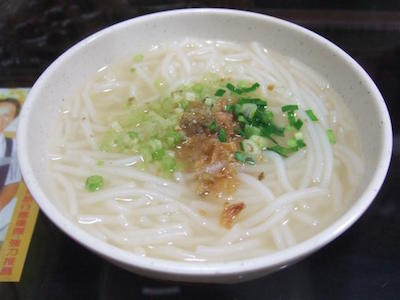

米粉湯
米粉也是台灣常見的主食之一，是用稻米為主要材料製作的細長條狀食材，因為臺灣盛產稻米，故流行很廣。米粉質地柔韌，富有彈性，水煮不糊湯，乾炒不易斷。而經過加工煮熟、乾燥成形後，具有容易貯存、攜帶與煮食的特點，就像現代的泡麵一樣，所以十分受歡迎。
而台北米粉又比一般米粉粗，別稱為福州米粉，是福州人從故鄉帶來台灣的，福州人在台灣北部落腳後，成為了台北的特產。台北米粉的口感特別，更加滑順Q嫩，而晶瑩透白的粗大米粉，讓人看了就胃口大開，且比一般細長的米粉更容易填飽肚子。米粉湯作為早餐，通常會搭配大大的油豆腐，有時切些滷味下菜，滿滿一碗吃下去，既暖和又飽足！
